はじめに
本アプリは「打刻」と「残業申請」を1つの画面で完結させる勤怠管理ツールのデモ版です。
スマホブラウザでそのままアクセスでき、インストール不要で利用できます。
このマニュアルの読み方
立場により操作画面が異なります。以下のバッジで区別しています。
manager 経営層・部長・課長など承認権限を持つ人
member 現場社員・パート・バイト
用語
- 打刻
- 出勤・退勤の時刻を記録すること。
- 残業申請
- 事前/事後どちらでも提出可能。承認は manager が行う。
- 差戻
- 申請内容に修正が必要な場合、コメント付きで申請者に返すこと。再提出可能。
- 所定終業時刻
- 初期値 17:30。残業申請の開始時刻のデフォルト値として使用される。
目次
- 1ログインp.3
- 2打刻のしかたp.4
- 3残業申請を出す（社員）p.5
- 4勤怠ダッシュボード（管理者）p.7
- 5残業申請の承認（管理者）p.8
- 6月次レポート・CSV出力p.9
- 7設定・ユーザー管理p.10
- 8デモ機能：別の人で試すp.11
- 9よくある質問p.12
1ログイン
商談デモ版では「かんたん体験ログイン」を用意しています。
パスワード入力なしで、立場を選んでクリックするだけでログインできます。
- スマホのブラウザで https://attendance-demo-dun.vercel.app を開く
- 「かんたん体験ログイン」から試したい立場のカードをタップ
- 自動的にその役職の画面に遷移します（manager は管理画面、member は打刻画面）
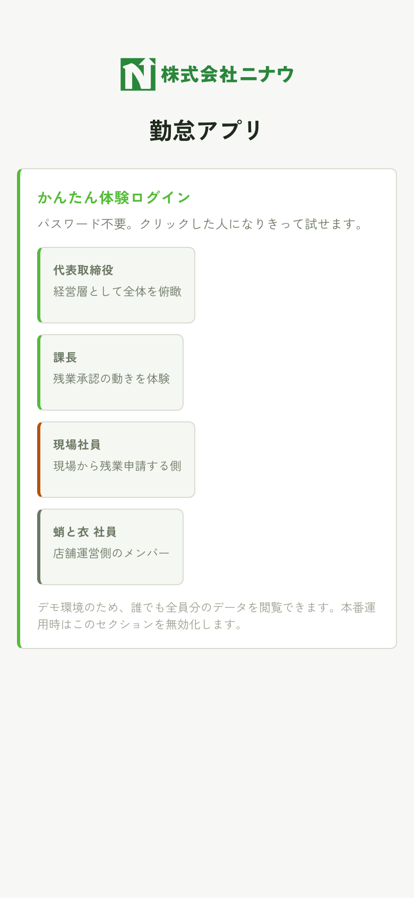
ログイン画面（モバイル）
4つのデモ役職
| 役職 | 体験できること |
|---|
| 代表取締役 | 経営層として全体を俯瞰、すべての操作が可能 |
| 課長 | 残業承認・差戻のフローを操作 |
| 現場社員 | 残業申請を出す側の体験。自分のデータのみ閲覧可 |
| 蛸と衣 社員 | 別組織のメンバー目線 |
デモモードのためパスワード不要で誰でもログインできます。本番運用時はこの体験ログインを無効化し、各社員に個別のパスワードを発行します。
2打刻のしかた
出勤・退勤は巨大ボタンを1タップするだけ。
今が出勤中なら「退勤」、退勤済または未打刻なら「出勤」が自動表示されます。
- 画面中央の大きなボタン（緑=出勤 / オレンジ=退勤）をタップ
- 瞬時に記録され、画面下部の「本日の打刻履歴」に追加されます
- 状態バッジ（出勤中／退勤済／未打刻）が更新されます
残業申請への動線
打刻ボタンの下に「残業申請へ」リンクカードがあります。
その日の退勤打刻後に残業申請を出す場合はこちらから。
セッションは12時間有効。30分操作がないと自動的にログアウトします。
3残業申請を出す（社員）
member
現場社員や蛸と衣メンバーが、残業の事前申請・事後申請を提出する画面です。
3-1. 申請履歴を見る
- ヘッダー「[名前]▾」メニュー → 残業申請
- または打刻画面下部の「残業申請へ」リンクから
状態バッジの見方
- 申請中：承認待ち
- 承認済：完了
- 差戻：修正が必要、再申請可能
- 却下：認められなかった
3-2. 新規申請を出す
- 「+ 新規申請を作成」をタップ
- 申請種別を選ぶ（事前申請 / 事後申請）
- 申請日と残業開始/終了時刻を入力（退勤打刻があれば自動セット）
- 現場名（過去使用順でサジェスト）と作業内容（200文字以内）を入力
- 「確認画面へ →」で内容確認 → 「申請を送信する」で完了
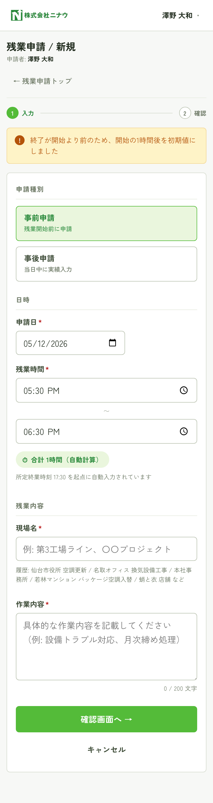
新規申請フォーム
事後申請は当日中のみ受け付けます。翌日以降の遡及はできません（事前申請推奨）。
差戻された申請の再申請
差戻になった申請を開くと、「再申請する」ボタンが表示されます。前回値がプリフィルされた状態で
フォームが開くので、コメントに沿って修正して送信します。
4勤怠ダッシュボード（管理者）
manager
出勤中の社員・労働時間・長時間勤務の警告を1画面で把握します。
manager でログインすると最初に表示される画面です。
- ログイン直後の画面、もしくはヘッダーメニュー → 「管理画面」
- 上部の AI 今日のサマリー で全体状況を1行で確認
- 未承認バナー から残業承認キューに直接ジャンプ可能
- KPI 4枚（出勤中 / 退勤済 / 未出勤 / 合計労働時間）と タイムライン（ガントチャート） で詳細を確認
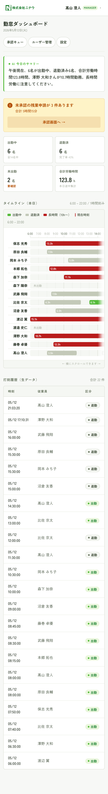
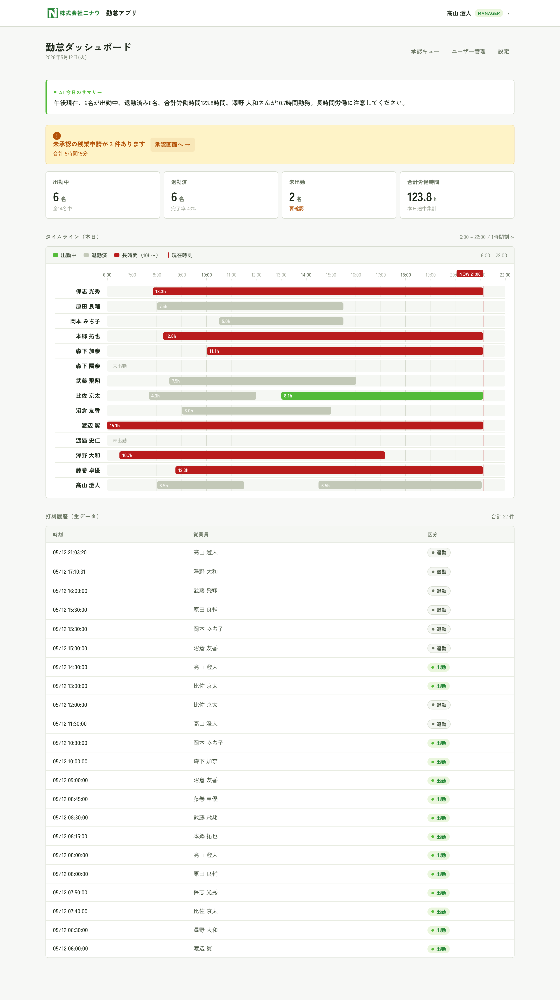
勤怠ダッシュボード（左: モバイル / 右: PC）
タイムラインは 緑=出勤中 / グレー=退勤済 / 赤=10時間超 で色分けされます。
現在時刻の縦線（NOW）も表示されるので「今どうなっているか」が一目で分かります。
5残業申請の承認（管理者）
manager
申請中の残業を「承認 / 差戻 / 却下」で処理します。
差戻と却下はコメントが必須です。
- ヘッダー → 「管理画面」→ 「承認キュー」、または未承認バナーから直接
- 申請カードの「承認」をタップで即時承認
- 「差戻」または「却下」をタップ → コメント入力欄が展開 → 確定
- 処理後はフィルタ「すべて」で過去の承認履歴も確認可能
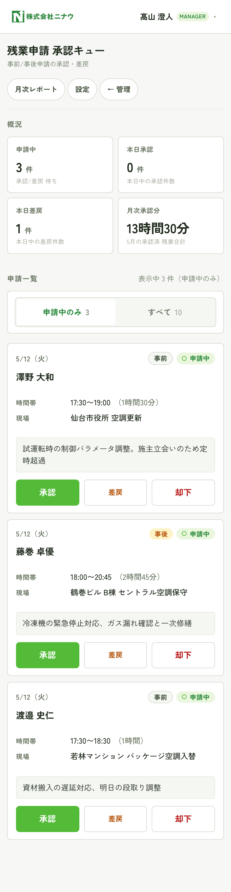
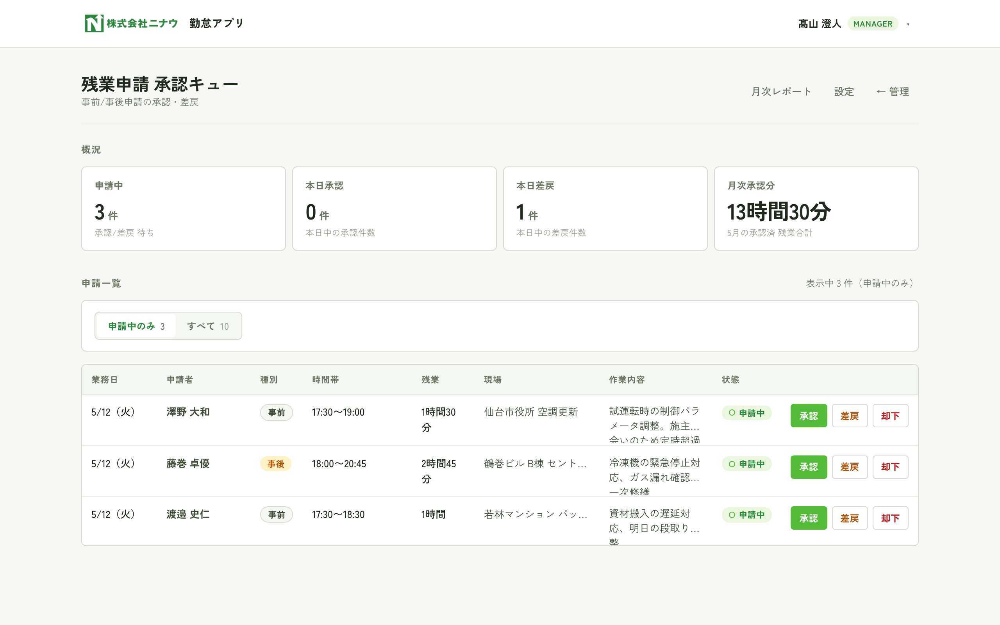
残業承認キュー
差戻・却下の違い
| 操作 | 意味 | 申請者の次のアクション |
|---|
| 承認 | 申請を確定。月次集計に反映 | 不要 |
| 差戻 | 修正してもう一度出してほしい | コメントを見て再申請 |
| 却下 | 申請を認めない | 原則終了 |
6月次レポート・CSV出力
manager
実労働時間と承認済残業を月次で突き合わせ、CSVでダウンロードできます。
給与計算用・労務監査用の出力が想定です。
- 「管理画面」→ ヘッダーの「月次レポート」
- 月切替ナビ（◀／▶）または月選択フォームで対象月を選ぶ
- 合計バッジ4枚で月次サマリーを把握（承認済 / 申請中 / 却下 / 差分注意者）
- 「CSV（承認済）」または「全件CSV」ボタンでダウンロード
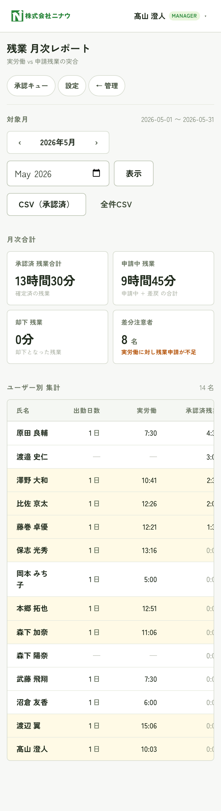
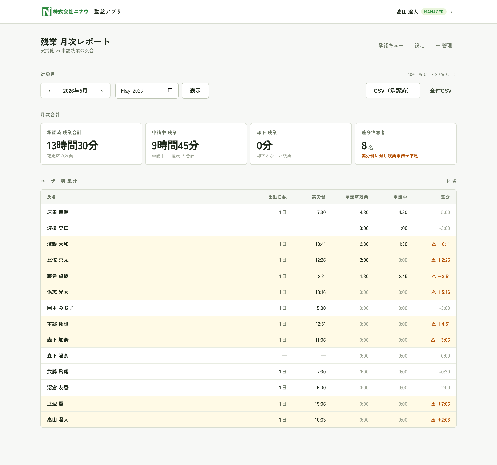
月次レポート
CSV出力の列
申請ID / 業務日 / 申請者 / 申請種別 / 状態 / 開始時刻 / 終了時刻 /
残業時間（分）/ 残業時間（h:mm）/ 現場名 / 作業内容 / 承認者 / 承認日時 / 差戻コメント
UTF-8 BOM付き・CRLF改行で出力されます。Excel で開くと文字化けせずに表示されます。
7設定・ユーザー管理
7-1. 設定
manager 所定終業時刻と現場名マスタを管理します。
- 所定終業時刻：残業申請フォームの開始時刻デフォルト値（初期 17:30）
- 現場名マスタ：申請時のサジェストに出る現場一覧。追加・無効化が可能
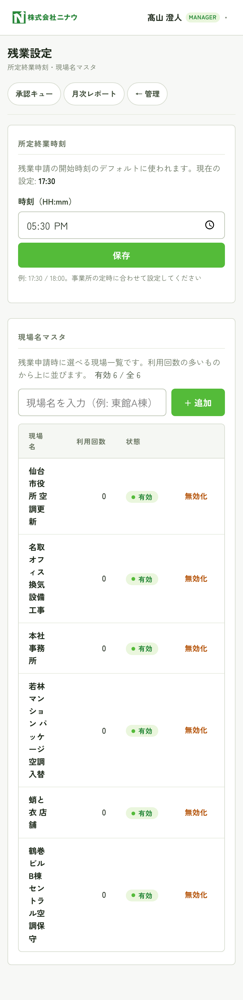
7-2. ユーザー管理
manager 各社員のパスワード再発行・有効/無効切替を行います。
- ヘッダーメニュー → 「ユーザー管理」
- パスワードを忘れた社員の行で「PW再発行」をタップ
- 新しいパスワードが画面に1回だけ表示されるので、本人に渡す
- 退職者は「無効化」で非アクティブ化（過去の履歴は保持）
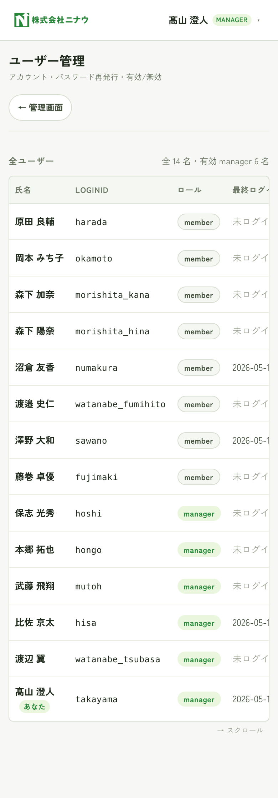
最後の manager は無効化できません（システムがロックされるのを防ぐため）。
8デモ機能：別の人で試す
デモ版限定。ログアウトせずに別の役職に切り替えて挙動を比較できる機能です。
商談中に「manager視点」「member視点」を素早く行き来できます。
- 画面右上の「[名前]▾」プルダウンをタップ
- メニュー内の「デモ: 別の人で試す」セクション
- 切り替えたい役職をタップ
- 即座にその人としてログインし直し、適切な画面に遷移します
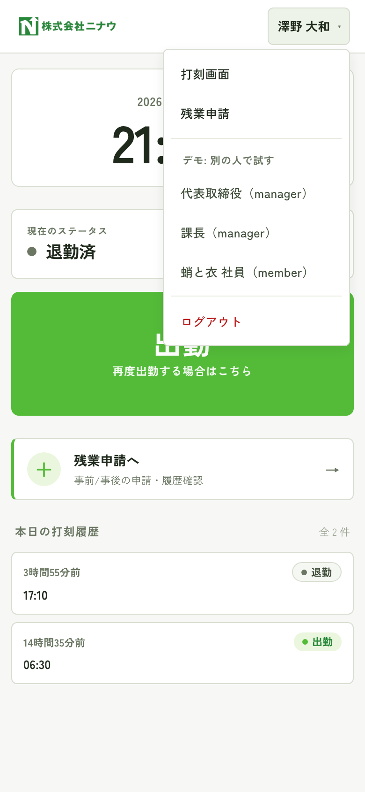
ユーザーメニューを開いた状態（自分以外の3役職が表示）
本番運用時はこの機能を無効化します。
各社員は自分のアカウントだけログインできるようになります。
9よくある質問
Q. スマホ以外でも使えますか？
PC・タブレット・スマホすべてで動作します。画面サイズに応じて自動でレイアウトが切り替わります。
Q. 打刻のミスは管理者が修正できますか？
本デモ版では打刻の編集機能は実装されていません（本番化時の検討事項）。残業申請は社員自身が差戻→再申請できます。
Q. データは安全ですか？
本番運用ではアプリ全体に Basic 認証または個別パスワード認証を有効化します。
データベース（Turso）は東京リージョンで保管され、TLS で暗号化通信されます。
Q. 給与計算ソフトと連携できますか？
月次レポートから CSV をダウンロードできます（UTF-8 BOM、Excel互換）。
現状は汎用フォーマットですが、freee / マネーフォワード等の特定フォーマットへの拡張は対応可能です。
Q. 何人まで使えますか？
技術的には数百人規模まで対応可能。今回のデモは14名構成です（ニナウ社員10名＋蛸と衣4名）。
Q. 車両管理機能は？
現状は未実装。ご要望があれば設計から相談させてください
（車両×ユーザー×日時の紐付け、運行記録の出力など）。